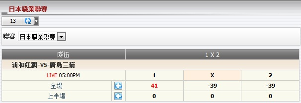

1 x 2
總代理根據1x2之投注類型在每場賽事的輸贏預測 (圖1.1)。

圖 1.1
在這個例子中, 會員投注於賽事 浦和紅鑽 -vs- 廣島三箭, 投注額 = 130, 賠率 = 2.06, 總代理佔成 = 30%, 投注類型 = 1x2, 會員選擇: 全場.1是指主隊 (浦和紅鑽) 完場後會贏。
- 如果全場結果是客隊贏或和局那麼會員會輸
--> 總代理會贏: 投注額 * 總代理佔成 * 1 = 130 * 30% * 1 =
39
- 如果全場結果是主隊贏那麼會員會贏
--> 總代理會輸: 投注額 * 總代理佔成 * (賠率 - 1) = 130 * 30% * (2.06 - 1) = 41